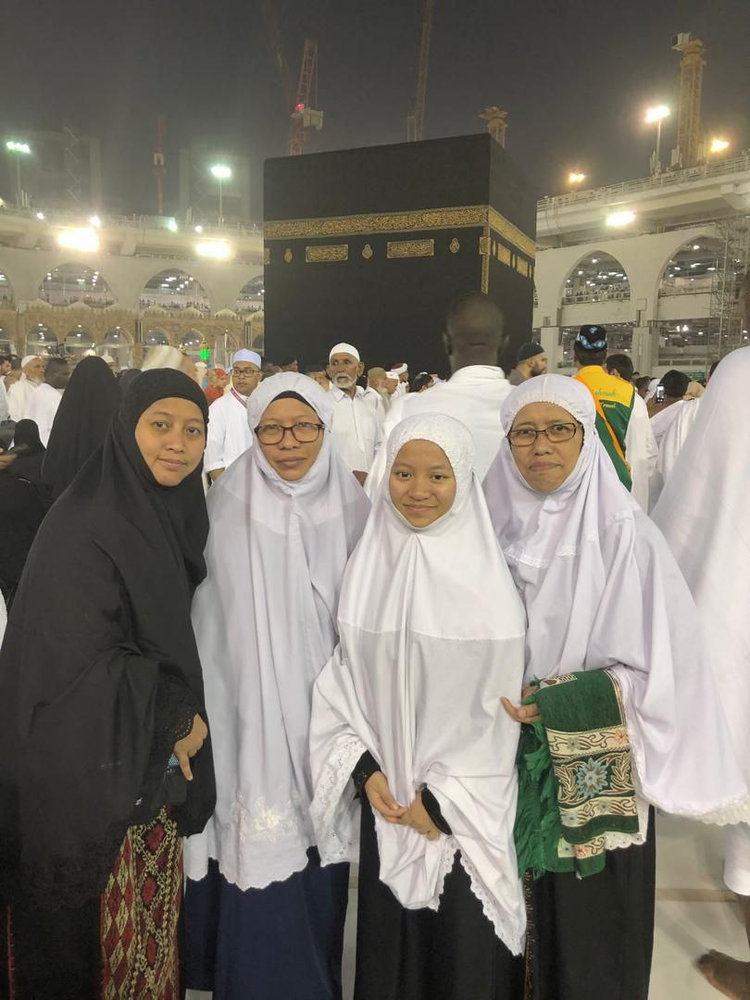
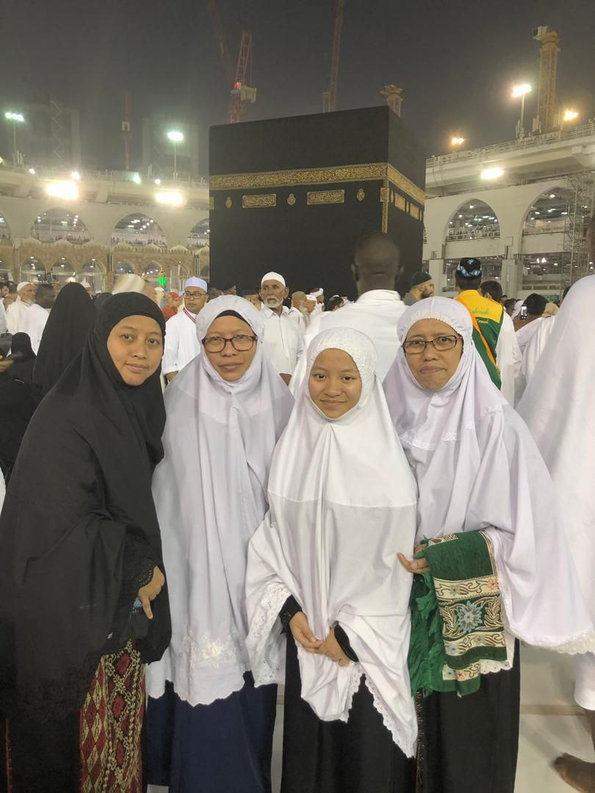
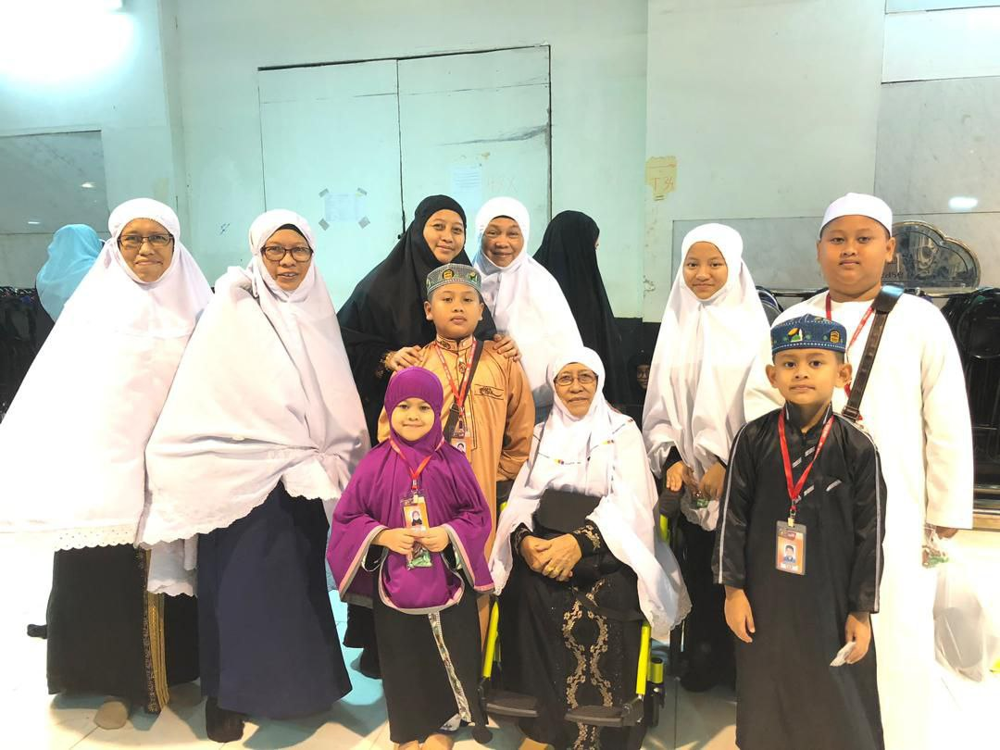
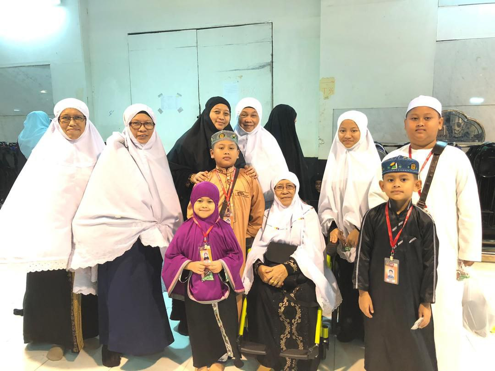
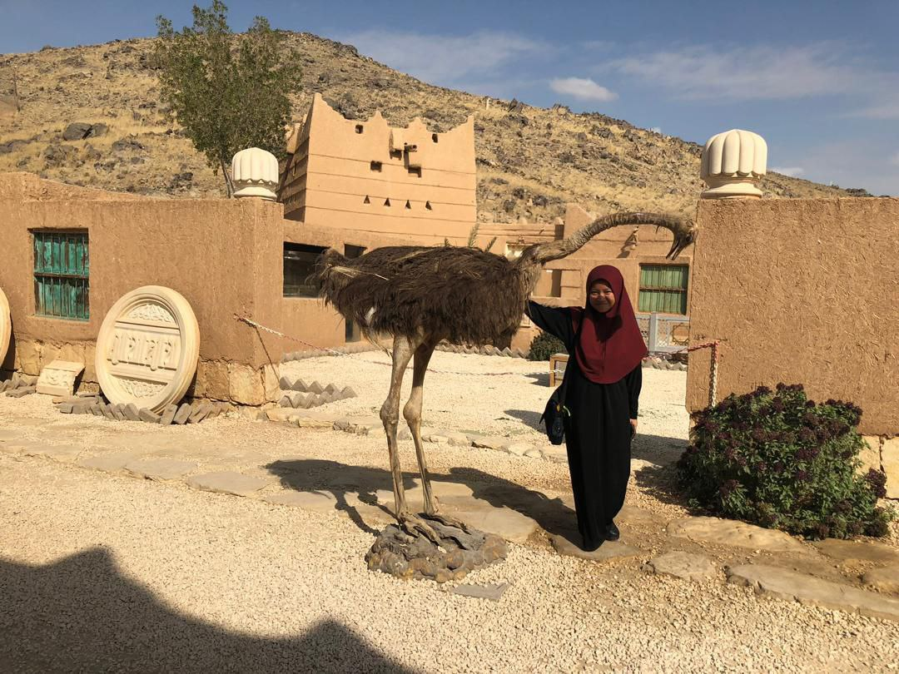
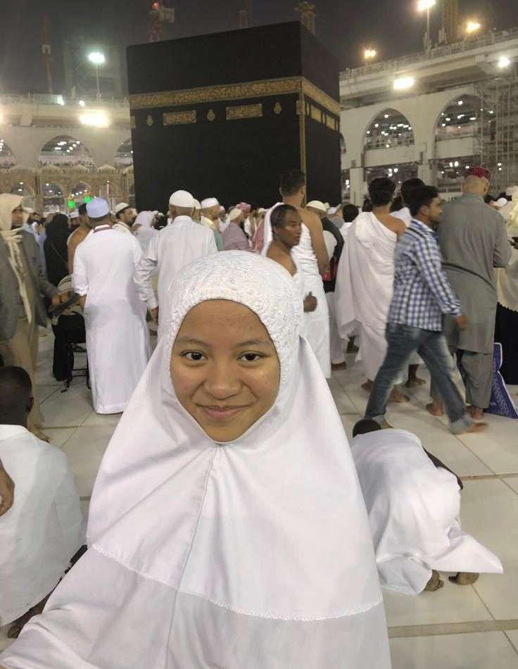
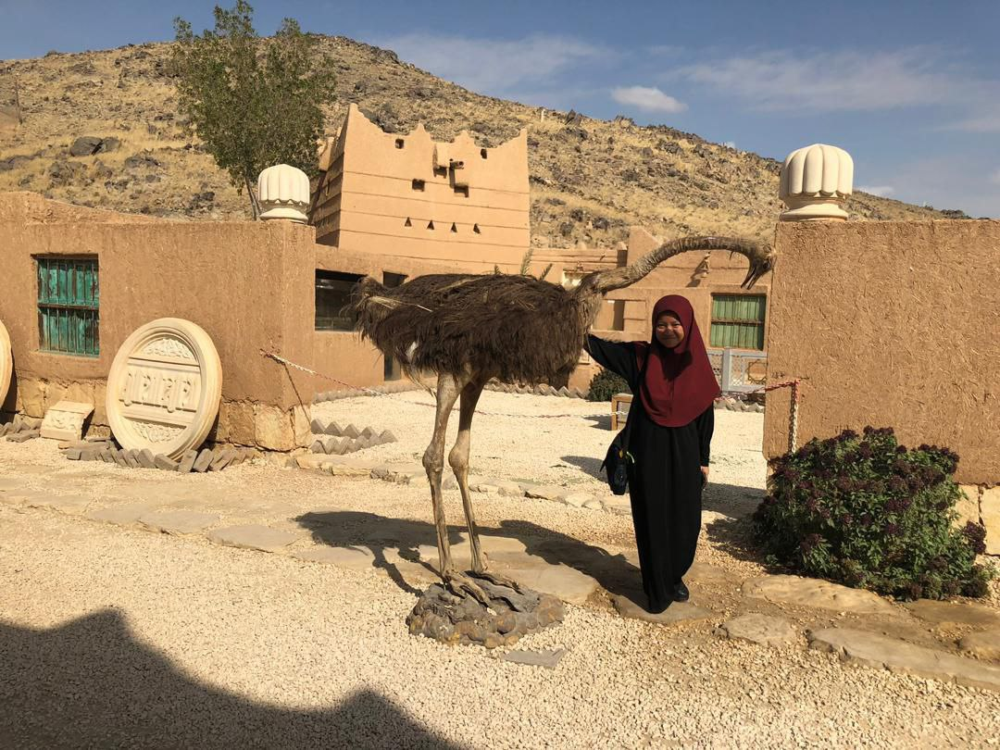
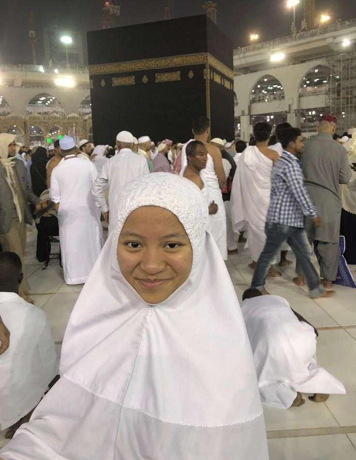

on February 5, 2019, my family and I entering the holy land of mecca for the first time. Honestly,
I never thought I would be able to perform umrah at such an early age and it was a very meaningful experience for me.
My family and I arrived in Mecca at 10 am and our family did umrah together. The atmosphere there is very surprising because
the weather there is very cold and comfortable. There I spent a lot of time worshiping with my family members.
The food there is also very tasty which is "Nasi Arab". My family and I stayed in Mecca for 10 days and while in Medina for 2 days.
In Madinah, my family and I visited the tomb of the Prophet Muhammad SAW and prayed at Raudhah.
This experience is impossible for me to forget because it was a very meaningful momment for me.
|


 "
"


 


 



 


